Introduction to the MarketPlace
Introduction to the MarketPlace
What is the MarketPlace?
The MarketPlace is the distribution mechanism for the OneStream platform and solutions. The MarketPlace section allows Users to download pre-created solutions to add extra functionality to an existing version of the OneStream application. The platform section contains all currently supported OneStream platform installation packages. Think of it like an app store for your phone, which also allows you to download new versions of your phone’s operating system.
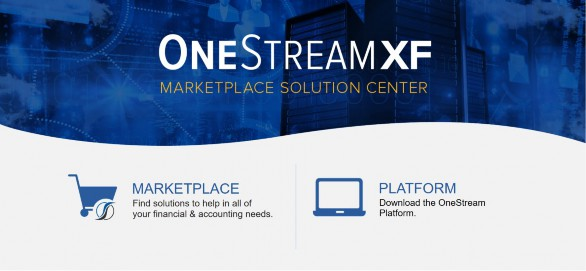
Figure 13.1
Introduction to the MarketPlace › What is the MarketPlace?
History of the MarketPlace
At the very first OneStream User Conference (Aug 2013), we discussed our vision for OneStream during the keynote presentation. At that point, we already had the basis for our first solution and knew that we were on to something. In the keynote presentation, the founders discussed their journey with OneStream using old cell phones to showcase the transition in technology through the years – along with how they came to start OneStream. The smartphone was the perfect analogy for where OneStream was going. Do you need a separate cell phone, flashlight, camera, and GPS? No! And the same should go for financial software. You should no longer need to buy separate financial Consolidation, Planning, and Account Reconciliation solutions. It should be a smart system – all in one package – just like a smartphone.
Figure 13.2
In the spring of 2014, at the second OneStream Splash User Conference, OneStream released the first incarnation of the MarketPlace. It was originally called the OneStream Fish Market based on the company’s original fish logo, and allowed Users to access OneStream software, solutions, and online video training, as well as link to OneStream support. By the spring of 2016, OneStream had updated its logo, and with it came a rebranding of the Fish Market as the OneStream MarketPlace.
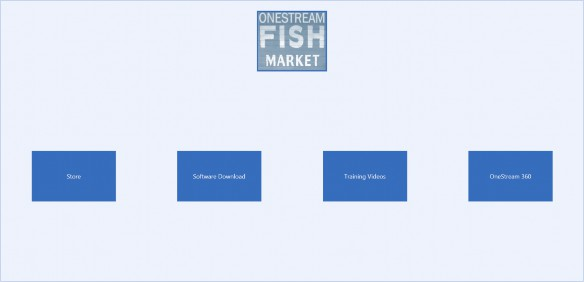
Figure 13.3
Introduction to the MarketPlace › What is the MarketPlace? › History of the MarketPlace
MarketPlace Origin
When I started at OneStream in early 2013, I was working on a project for one of our first customers. This customer had already implemented Actual reporting and was now adding in their Forecast process. Part of their original Actuals Reporting Implementation had been a custom reporting Dashboard that allowed Users to select their Scenario, Time period, Entity, and Report from predefined dropdowns. Those selections would generate the Reports and display them to the User.
One of the items I was tasked with adding was support for their Forecast data to the custom reporting Dashboard. As I had never worked with OneStream Dashboards before, I had to basically disassemble the code to figure out how it all worked. It turned out that their Forecast involved more than just adding a new Scenario Type; they were looking to Forecast at a much more detailed level. Many of the items on the Dashboard that were already working for Actuals would need to be refactored in order to support the new Forecast.
The final version of this custom reporting Dashboard turned out to be something that we thought would be useful for more than just one customer. It could be used by all our customers and expand OneStream’s value with minimal effort. With some additional features and documentation, the Guided Reporting (GRT) solution was born.
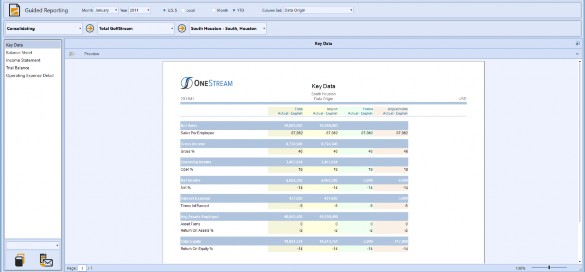
Figure 13.4
Introduction to the MarketPlace › What is the MarketPlace? › History of the MarketPlace
OneStream as a Development Environment
The original intent behind the Dashboard and Business Rule toolset in OneStream was for reporting and Workflow customization. Users would be able to create Forms to enter data and have dropdowns that allowed selections to be entered onto the Form. This was also the thought process for the custom reporting solution that we originally implemented. During the process of creating the Guided Reporting solution, we came to the realization that what we had was not just going to be used for reporting and customization. This was a platform for developing OneStream solutions. We had created a full development environment.
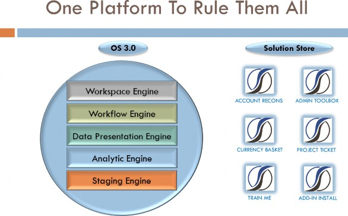
Figure 13.5
There was everything needed for OneStream to be a true development platform… just as envisioned at the first conference. There was an interface for creating UI with our application Dashboards, a truly integrated development environment (IDE) with our Business Rule editor, and access to all of OneStream’s BRAPIs. In addition, we had full access to all the OneStream Engines, as well as security.
The MarketPlace itself is a great example of OneStream’s platform concept. Once we started creating solutions, we knew that we would need a store/distribution method for getting the solutions to our User base, and when we started thinking about building a website for hosting a store, we quickly concluded that OneStream itself would be the perfect method for hosting it. OneStream already has built-in security that can be accessed through the BRAPI and we could even run other solutions in the MarketPlace as part of the MarketPlace.
On the very first version of the MarketPlace, we also included a solution that could be used online. The section for Training Videos was the Train Me (TRM) solution, which was used to provide access to OneStream-created video content. This was used to provide video instructions on how to use OneStream and the MarketPlace itself. Additionally, we added a section called Online Solutions into the MarketPlace that contained Dashboard accelerators and samples. These allowed Users to create starting points for their own solutions. We had turned the MarketPlace itself into a solution that not only allowed solutions to be downloaded, but which also allowed Users to create their own custom solutions.
Introduction to the MarketPlace › What is the MarketPlace?
MarketPlace vs. Platform Development
There are two distinct development teams within OneStream: the platform team and the MarketPlace team. When I started with the company, only the platform team existed. As the company was so small, there was no official quality testing team; everyone in the company participated in testing new releases. At the time, this worked well; the early releases were small.
By the end of 2013, I had moved from working on customer implementations to the development team. At this point, I was running the testing for platform releases as well as working on developing the Fish Market and its solutions. This was the beginning of the separate development team for focusing on solution development.
Introduction to the MarketPlace › What is the MarketPlace? › MarketPlace vs. Platform Development
Time to Market
The platform development team focused on adding new features, and many of the new platform features would be in process for more than one release. Feature code would be added but not available (or visible in the product) until the new feature was fully complete sometime in the future. Typically, the release cycle for the platform code would be 3 to 4 months for these feature releases.
What we found with the MarketPlace solutions was that many of the early solutions were much smaller in scale compared to the platform. With built-in access to the platform infrastructure, we could develop solutions much quicker than the major platform features could be implemented. Solutions to compete with major products in the financial arena could be created and released in less than six months.
Introduction to the MarketPlace › What is the MarketPlace? › MarketPlace vs. Platform Development
Tip of the Spear
MarketPlace solutions became a weapon used by the team to win deals. As the MarketPlace can create new solutions so rapidly, we could easily create the new features and functionality needed for prospective deals. The MarketPlace team was beginning to focus on creating these new products in order to expand OneStream markets.
A great example of this is the Account Reconciliation (RCM) solution. We already had customers’ books of record for their financial data. If we could reconcile that back to their source systems, we could have a fully functioning Account Reconciliation System quickly. Why should a financial systems User buy a reconciliation suite and then need to take their existing verified data and load it into another separate system to reconcile it? It’s the same way with your smartphone; you don’t have two separate contact lists – one for texts and one for phone calls – you have one contact list that links to both.
In the spring of 2016, we started working on the initial build of RCM using the validated data that we already have in our Workflow process as the source for allowing Users to reconcile that data back to their source. Account Reconciliation was another market opportunity that just seemed to be a natural fit for what we already did. In four months, we had a working prototype that we could demo to get feedback. One of the very first demos was to a group in the office for initial Admin training.
In that group was a customer that was in the process of looking for Account Reconciliation software; they had already made a preliminary selection for a competing product. After demoing the solution to the class, the customer was ready to put the competing product on hold and wait for RCM to be completed. This allowed us to validate that we were on track with our thought processes, and showed how an agile team could quickly create a solution able to compete with products from billion-dollar competitors.
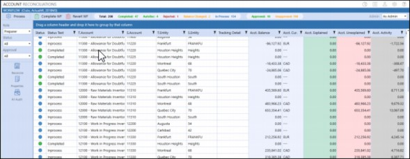
Figure 13.6
Introduction to the MarketPlace › What is the MarketPlace? › MarketPlace vs. Platform Development
MarketPlace Ties to Platform Releases
Since solutions in the MarketPlace are created using the platform as the basis, solutions are tied to platform versions. As the platform team adds new features, we can take advantage of these new tools and components to expand the functionality of our solutions. This allows us to focus on adding valuable new features and solutions without having to develop the toolset as well.
As the platform is our development environment, the MarketPlace is a customer of the platform team. We request new features just as an external customer would; we go through a similar triage process as well. The main benefit is that – since we are part of the same company – we have more input into updates to the development tools than companies that use external development tools.
The downside of this is that every solution that is released is tied to a minimum version of the platform. Every time the MarketPlace uses a new component or BRAPI added by the platform, we can only use that solution on servers running that same version of the platform of higher. This is due to the new component/BRAPI only existing in that new platform version. The solution may not work properly and may even fail to import on an older version of the platform, depending on the new components being utilized in the solution.
The labeling we use to identify each MarketPlace release represents the linkage with the platform versions. A normal solution would have the following version: PV620-SV100. This represents platform version 6.2.0, solution version 100. That means that this solution will only work with platform version 6.2.0 and greater, and that this is the first version (100 version) of the 6.2.0 release.
Introduction to the MarketPlace › What is the MarketPlace? › MarketPlace vs. Platform Development
Development Process
Outside of release schedules and development time, the MarketPlace and platform development teams are really very similar. Both are structured such that they have multiple sprint teams that each focus on an area of the product or a solution. Each sprint team is made up of developers, quality testers, document writers, and product management. The teams work together to create quality products.
The MarketPlace and platform development teams are customer-driven, and focused on making products that meet the customer or partner’s needs. For the MarketPlace, every week, we have a team made up of a variety of stakeholders in the company (support, services, customer success, partner management, etc.) that reviews all open requests that have been entered in our defect/enhancement tracking system. Each item is reviewed to determine the next steps.
During this meeting, the attendees can bring up any other open item or rejected enhancement for discussion. This request may come from a partner or customer who is looking to get guidance on when a new enhancement will be coming, or maybe someone stating the reasoning behind a rejected item to show its value to the community. Many times, a feature that was dismissed is re-opened and added after a solution has evolved, and new use cases come to light.
Any bugs are assigned to a Quality Assurance tester to replicate. If the issue is replicated, then the QA works with development to determine if there is a workaround that can be given to the customer as an interim solution. If the issue cannot be replicated, the QA works with support to help determine if the issue is a configuration issue or if the QA team needs additional customer files to replicate the problem. In the end, if the issue is a bug that requires a code change to resolve, it is approved and assigned to a release.
Any enhancement or new feature requests that come in are discussed with the team to determine if the request is a very specific use case (that does not apply to the majority of customers), or if this is a needed component that we did not originally define when the solution was created. If we think that a request only applies to a very specific use case, product management works with our subject matter experts to verify the customer request and determine if the request can be handled in a more innovative manner than was originally defined in the request.
Enhancement requests come in from both customers and partners, and sometimes from partners on behalf of a customer. In many cases, partners have modified or customized a solution to add functionality that a customer is looking for in a solution, instead of putting in a request to OneStream. In most cases, this should be avoided as it causes problems with support for the solution going forward. When new versions of a solution are released, customers with modified solutions will find themselves needing to attempt to make the same changes again in the newer versions. In some cases, the code can be changed so much that the original modification may no longer work, leaving the customer stranded.
When partners get requests from a customer to modify a solution, or do this to meet a customer requirement, they should reach out to OneStream support first. This allows the development and product management teams to view the request and propose alternate solutions, whether that be a design change, or potentially a temporary code workaround that can be implemented in a full feature in a future release. This avoids customers feeling upset about their solutions not working properly, and their requests get to help make the MarketPlace solutions that much better.
Introduction to the MarketPlace › What is the MarketPlace?
What’s in the MarketPlace?
The OneStream MarketPlace has two main areas that are available to customers and partners, Platform Software and MarketPlace Store. Also available in the MarketPlace is the Solution Builder and Helpful links.
Introduction to the MarketPlace › What is the MarketPlace? › What’s in the MarketPlace?
Platform Software
The platform side of the MarketPlace is the download site for the OneStream Platform. It contains download links that allow Users to download any of the currently supported versions of the platform, and all related content.
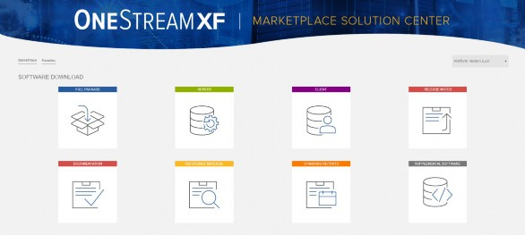
Figure 13.7
On the software download page, there are eight tiles for downloading platform installation software, as well as Reports and reference material.
Server – contains the install for the OneStream Application and Web Servers.
Client – contains installation files for the Excel Add-in, OneStream Studio Report Builder, OneStream Desktop, and the silent install packages for automating the installation of client tools.
Documentation – installation instructions, and design/reference documents in PDF format.
Reference Material – sample GolfStream application showing the usage of many OneStream functions, sample Workflow videos, and Application Build sample videos.
Standard Reports – zip file containing the MarketPlace Standard Application Report solution (RPTA), Standard Cube View Styles (RPTC), and Standard System Reports (RPTS).
Full Package – this zip includes all other software downloads except release notes and supplemental software.
Release Notes – document detailing new and changed items for the selected release.
Supplemental Software – Python installation package required by the Predictive Analytics MarketPlace solution.
Introduction to the MarketPlace › What is the MarketPlace? › What’s in the MarketPlace?
MarketPlace Store
The store side of the MarketPlace holds a variety of solutions for download. While they are broken into categories in the store (to make search easier), we group them into three main types internally (Full Solutions, Starter Kits, and Other).
Full Solutions are the primary focus of the MarketPlace development team. These solutions can be described as separate software products. They can involve a consulting engagement with an implementation team and application design. While they may use or access financial data from within OneStream, the main functionality of any solution is completely separate from the platform, and is accessed through custom screens that have been created specifically for that solution.
Account Reconciliation (RCM) is a good example of this. Even though it is free within the MarketPlace, it’s a full product with its own dedicated development team. It has even been the main reason for purchasing OneStream when customers want to implement RCM before implementing budgeting or Actual Consolidations. This solution can be compared to some of the main products from our competitors (that sell for millions of dollars).
While full solutions can be complex and require a full implementation and design, many are simple tools that add useful functionality into OneStream. For example, the Cloud Admin Tools (CAT) solution’s main purpose is to provide Users with the ability to maintain their cloud Users and applications on their own… without intervention from the OneStream Cloud support team. This solution can be downloaded from the MarketPlace and installed in a customer environment with no support or implementation.
Starter Kits are exactly that: solutions that accelerate the building out of functionality within OneStream. These solutions are typically used during the design and implementation of a OneStream project. Take the Tax Provision (TXP) solution, for example. It provides an accelerated path to building out what is already a part of the customized OneStream financial model. Tax Provision takes advantage of the inherent capabilities of the OneStream platform but layers on a tax-specific calculation model. While this solution does have a specific User interface for its setup, the primary focus of its processing is enabling Users to setup and use OneStream’s financial model.
The last type (Other) is a generic catch-all of additional useful content. It ranges from sample End-User training (that allows customers’ Admin teams to roll out pre-packaged training on a variety of topics) to Excel templates for use in importing data into custom tables. Most solutions of this type cannot simply be imported into OneStream and setup as a full solution or starter solution would be.
Introduction to the MarketPlace › What is the MarketPlace? › What’s in the MarketPlace?
Solution Builder
The Solution Builder is an online tool that is included in the MarketPlace, and can be accessed from the store or platform download pages. Solution Builder is only available to use on the MarketPlace site and is not downloadable. This tool can be used to create predefined OneStream Dashboard solutions for use in reporting, Workspaces, and other OneStream MarketPlace solutions. Users can select from a variety of predefined Dashboard templates and color themes to quickly create a customized solution that can be implemented in any OneStream Application. The Solution Builder contains three types of templates (Accelerators, Layouts, and Samples).
Accelerator Templates are sample starting points for creating OneStream MarketPlace solutions. They are created based on OneStream’s current MarketPlace Solution Standards. They provide the infrastructure for building a Dashboard solution that could include additional online solutions, Dashboard layouts, and samples by using a common Solution Code to build out the Dashboard solution. Using the common Solution Code will add these Components into a single Dashboard Maintenance Unit, which is the current OneStream standard for MarketPlace solutions. These templates contain a single Dashboard Maintenance Unit with multiple Dashboard Groups (OnePlace, Solution Content, Dialogs, Help, Main, Settings, Setup, etc.), along with standard Business Rule code used in MarketPlace solutions (table creation, uninstall, Dashboard Event Handlers, etc.)
Layouts are intended to be used as the starting point for a Dashboard that can be used standalone, or added to an existing solution. If you select an existing Solution Code, the new layout will add the Dashboard and its Components into the existing Dashboard Maintenance Unit for the selected Solution Code. The benefit here is that you can easily add new screens to your existing Dashboards without having to spend time creating Dashboard layouts. Just download the desired template and plug it into your existing page.
Sample Templates are self-contained examples of specific Dashboard functionality (Gantt Chart, Advanced Charts, etc.), which may be added to a Dashboard Maintenance Unit in a OneStream Application and used in Application Dashboards. These include more advanced Dashboard Components and may include additional sample Business Rules.
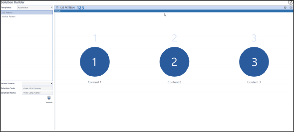
Figure 13.8
Users select a template to use and then make selections in the remaining fields (Theme, Solution Code, and Solution Name) prior to downloading the customized template. Different themes change the template colors for labels and headers. The selected color option will be applied to the selected template that is shown in the preview window.
The Solution Code is a unique short name for the selected template. This is equivalent to the OneStream Solution Code given to each MarketPlace solution (RCM, UTM, TXM, etc.). The Solution Code cannot start with a number. It is recommended to avoid using known OneStream MarketPlace Solution Codes to avoid conflicts with active MarketPlace solutions in a OneStream application. This helps ensure the naming for the new template, and its Components, do not conflict with any existing solution or Workspace name when it is imported into an application. The Solution Code is used in generating the name of the Dashboard Maintenance Unit, and all the related Dashboard Component names, according to OneStream MarketPlace Solution Standards.
The text entered in the Solution Name field combined with the Solution Code will become the Maintenance Unit name for the template. This combination generates the Maintenance Unit Name according to OneStream MarketPlace Solution Standards. This ensures that – when importing the solution into an application – it will not encounter a conflict with an existing Dashboard or solution already being used.
There is one selection (Dashboard Group ID) that is only displayed when selecting the template type of Layout or Sample. This is a unique suffix that is added to the layout/sample template Components for the Dashboard Maintenance Unit. The Dashboard Group ID allows finer control of
Dashboard Groups within a Dashboard Maintenance Unit, allowing a single template to be imported into an existing maintenance unit.
The final downloaded output generated by Online Solutions is an XML file that can be imported into your application. Once imported, it will create either a whole new Dashboard Maintenance Unit, or add additional Dashboards to an existing one.
Introduction to the MarketPlace › What is the MarketPlace? › What’s in the MarketPlace?
Helpful Links
The MarketPlace also includes many other useful links not related to downloading solutions or platform software. This area can be accessed from the Help link at the bottom of the store or platform screens. Included are SOC reporting, solution overviews, links to OneStream Academy, and the MarketPlace’s terms and conditions details.
Introduction to the MarketPlace
What Makes up a Solution?
Full solutions in the MarketPlace are made up of multiple OneStream components. The two main components that make a solution are Dashboards and Business Rules. These two items make up the User interface and logic behind the solution. Occasionally, other components such as Cube Views, metadata, Extender Rules, or Data Management tasks are included.
When you download a solution from the MarketPlace, you get a zip file that includes the Solution ID (e.g., – RCM, TXP, etc.) and the solution version information. Inside this zip are all the files that make up the solution. Most solutions can be directly imported into an application, and any solution will be ready to setup and configure. There are a few that also contain other files in the main zip, and the zip file cannot be imported directly into an application. Users should read the installation instructions shown in the MarketPlace prior to installing a solution for the first time.
With solutions where the downloaded zip file can be imported directly, the only contents are XML files. The components are named based on the objects from OneStream that they contain. For example, a file named ExtensibilityRules.xml will contain Extensibility Business Rules, and DataManagement.xml will contain Data Management steps and sequences. The heart of the solution is usually going to be ApplicationDashboards.xml as this contains the Dashboard Maintenance Unit and the three main Dashboard Types that interact with Dashboards (Dashboard Dataset, Dashboard Extender, and Dashboard XFBR String Rules).
Introduction to the MarketPlace › What Makes up a Solution?
Dashboards
Dashboards – and the Components that they include – are the visual interface for MarketPlace solutions. The Dashboards are arranged to hold Components and other Dashboards. All these items are contained in one maintenance unit, and each solution is made up of one Dashboard Maintenance Unit. The maintenance unit contains Dashboards, Components (buttons, combo boxes, grids, Reports, etc.), data adapters, parameters, and files.
Introduction to the MarketPlace › What Makes up a Solution? › Dashboards
Dashboard Organization and Naming
All Dashboard objects, from Dashboard Maintenance Units down to individual Components, are required by OneStream to have a unique name. MarketPlace solution Dashboard naming is specifically designed to aid in the layout of the User interface, as well as ensure object naming uniqueness. When designing Dashboards and Dashboard Groups for a MarketPlace solution, we have standardized object naming.
Dashboard Groups are named based on the screen content. Each Dashboard Group is a self-contained screen, as all the Dashboards that are displayed on the screen are included in the one Dashboard Group. Each group has a suffixed extension on the name that includes the solution abbreviation in parentheses, for example, One Place (UTM). In larger solutions (e.g., when there are a lot of groups), this is extended to include an additional character to denote the type of group or component.
Administration groups should have their abbreviation end in an
A.Analysis groups should have their abbreviation end in a
Y.Help groups should have their abbreviation end in an
H.Settings groups should have their abbreviation end in a
T.Setup groups should have their abbreviation end in an
S.View groups should have their abbreviation end in a
V. See below for several examples.
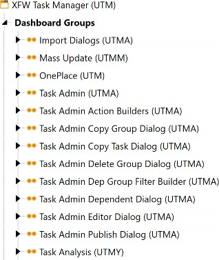
Figure 13.9
Dashboard names are designed to keep related Dashboards together, and related to their placement in the container Dashboard. Standard Dashboard naming is broken into three parts – prefix, main, and suffix – each separated by an underscore.
The prefix section is used to organize the visual layout on the application Dashboard Administration screen. The top-level Dashboard in a group is prefixed with a 0 to ensure it is displayed at the top of the Dashboard group, as this is normally the Dashboard that is referenced by other Dashboards. Dashboards within Dashboards should be listed as #a and #a#, again to keep things together. The main section is meant to be a meaningful description for the object – what the Dashboard is going to display. This may range from “Header” to “Toolbar” to “Content”. The suffixed section is simply the same suffix used on the containing Dashboard group. See the example below:
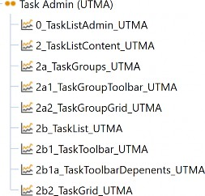
Figure 13.10
Introduction to the MarketPlace › What Makes up a Solution? › Dashboards
Component Naming
Components also have standard naming in order to ensure the same unique object naming. Each object is prefixed with a standard three-letter abbreviation (denoting the object Type) and suffixed with the three or four-letter solution abbreviation, separated by underscores. Originally, we used the prefix to add the ability to sort all Components of the same type together in the application Dashboard screen for a given solution. The need for this was removed, however, when the platform team added grouping for the Component types. Nonetheless, the prefix is still used when adding Components to a Dashboard as well, as it’s a good identifier for objects when looking at the object tree in design mode.
Introduction to the MarketPlace › What Makes up a Solution? › Dashboards › Component Naming
Component Types
Button – btn | File Viewer – fvw | Report – rpt |
Chart – cht | Gantt Viewer – gtv | State Indicator – sid |
Combo Box – cbx | Grid – grd | Supplied Parameter – spp |
Cube View – cvw | Image – img | Table Editor – ted |
Data Explorer – dex | Label – lbl | Text Box – txt |
Data Explorer Report – der | List Box – lbx | Web Content – web |
Embedded Dashboard – emd | Radio Button Group – rbg |
Figure 13.11
Introduction to the MarketPlace › What Makes up a Solution?
Business Rules
Business Rules are the main logic behind MarketPlace solutions; they provide all the actions that happen in a Dashboard. When you process recs in Account Reconciliation (RCM), or a task is completed in Task Manager (UTM), it’s a function in one of the Business Rules that is doing the heavy lifting. There are three main types of Business Rules that are used in MarketPlace solutions: Dashboard Dataset, Dashboard Extender, and Dashboard XFBR String. Each of these Business Rule Types have specific functions, but they are coded so that they can talk to each other.
This allows us to create core functions in one rule, and share the use of those functions with the other Business Rules.
Introduction to the MarketPlace › What Makes up a Solution? › Business Rules
Dashboard Dataset
Dashboard Dataset Rules are used to create datasets and return them back to the calling Component or function. The main uses in MarketPlace solutions are for reporting and populating Component lists. For example, combo box and list box controls have a bound parameter that provides the list of data that each Component will display. The parameters can either be defined manually by typing in a hard-coded list, running a SQL query against a database, or processing a Dashboard dataset function. The function may simply be to run a different SQL query, but the benefit is that you can control it programmatically. This allows you to change the query dynamically based on User input. The standard naming format we use for this type of Business Rule in solutions is XXX_HelperQueries (where XXX = the selected Solution Code, as described above).
Common Dashboard Dataset Uses:
Combine different types of data for a Report.
Build programmatic data queries (e.g., analytic plus SQL).
Conditionally build data query Reports.
Conditionally build data query for parameters.
Create data to display in advanced Components (map advanced charts, etc.).
Introduction to the MarketPlace › What Makes up a Solution? › Business Rules
Dashboard Extender
Dashboard Extender Rules are used to extend the functionality of Dashboards and Components. This is the primary business logic for the solution. When we want to click on a Dashboard Component – and have it do something (update a value, process data, etc.) – a Dashboard Extender is what we use.
Functions are defined in Dashboard Extender Rules and these functions are then assigned to the Dashboard Component in the Server Task property. When the button is clicked, or a grid is saved, then the function that was assigned to the specific Component is run. This allows us to control how the Dashboards function. Additionally, Dashboard Extender Rules are often applied to launching Dashboards, allowing us to set specific values when a Dashboard is opened. The standard naming format we use for this type of Business Rule in solutions is XXX_SolutionHelper (where XXX = the selected Solution Code, as described above).
Common Dashboard Extender uses:
Execute a task when the User clicks a button.
Perform a task and show a message to the User.
Perform a custom calculation.
Upload a file from the End-User’s machine.
Include Page State to store parameters and values about a specific Dashboard page instance.
Introduction to the MarketPlace › What Makes up a Solution? › Business Rules
Dashboard XFBR String
Dashboard XFBR String Rules are used to process conditional Dashboard parameters. Most Dashboard Components have properties that only allow selections from a predefined value list. However, when the value list is stored, it saves as a text value. This type of rule allows us to replace the stored text value with a conditional rule. For example, on many solutions, we have a settings button that should only be visible to Administrators. However, button Components have the Property IsVisible where we can only enter True or False. In this situation, we can replace the True / False with a rule that checks if the User is an Administrator; if they are, then it returns True. When the Dashboard is rendered, the rule gets processed and returns the result. The button receives that result and is displayed or hidden based on User security. The standard naming format we use for this type of Business Rule in solutions is XXX_ParamHelper (where XXX = the selected Solution Code as described above).
Introduction to the MarketPlace › What Makes up a Solution? › Business Rules
References to Other Business Rules
Most MarketPlace solutions utilize common functions that are defined in a Dashboard Extender Business Rule. The public functions defined in the shared Business Rule can be referenced and executed from other Business Rules. These shared functions create a set of standard helper functions and centralize maintenance of this shared logic.
In order to create a reference from one Business Rule to another, navigate to the rule calling the shared function and add a declaration in the Referenced Assemblies field of the Properties tab. The syntax used in the Referenced Assemblies field requires a BR\ prefix and the Business Rule name to reference (e.g., BR\RCM_SolutionHelper). Once added, an instance of the shared rule is declared in the calling function. This instance can be used to call any public function defined in the shared rule.
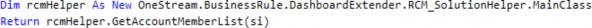
Introduction to the MarketPlace
MarketPlace Access
When new customers join OneStream, they go through an onboarding process with the customer enablement team. This process involves identifying two or three Users that will be provisioned for access in the MarketPlace. Typically, the Import/Export functionality (used to import solutions) is secured to Administrators within customer environments. As such, the Users granted access are typically Administrators for the company, although any User in the company can be granted access. The customer enablement team will provide User login information for each User that is provisioned.
The MarketPlace can be accessed from the OneStream Software webpage (www.OneStreamSoftware.com) by clicking on the MarketPlace link. This link can only be opened from Internet Explorer (See Figure 13.12). As support for Internet Explorer is ending in 2021, the User interface will be changing to default to the Windows Client interface. Clicking the MarketPlace link will open a new window that allows Users to download the ClickOnce Windows Client.
Figure 13.12
Introduction to the MarketPlace
Environment Considerations
Before beginning the installation of any MarketPlace solution, it is important to decide whether to build directly in the production OneStream application, or in a separate development OneStream application. The primary advantage of building in a production application is that you will not have to migrate the resulting work from a development application. However, there are intrinsic risks when making design changes to an application that is being used in a production capacity, and this is seldom advised. As a best practice, use a development OneStream application to build complex MarketPlace solutions.
If you do implement in a development environment, you will need to migrate the implemented solution to production before going live. Implementation and migration advice for each solution are included in the instruction documentation. Users need to read the instructions and carefully consider any impact prior to implementing in development or production environments.
Another major consideration, when implementing a MarketPlace solution, is the impact on the environment infrastructure. Solutions from the MarketPlace can put additional strain on servers due to processing. As the solutions normally utilize general server processing, you need to be aware that infrastructure requirements may need to be revisited in order to ensure a performant system.
You also need to consider who will be using the solution when evaluating infrastructure, as many solutions in the MarketPlace are used by a different set of Users to those originally defined. For example, the people who perform Account Reconciliation may not necessarily be the same Users performing the financial close. This can mean that there are additional concurrent Users in the system, potentially requiring a review of your infrastructure.
Introduction to the MarketPlace
Upgrading and Maintaining Solutions
MarketPlace solutions are regularly updated with enhancements and bug fixes. Our product management team defines the new features being added in each new release. To get these new features and bug fixes, Users must download the new version from the MarketPlace and install it into their environment. From the MarketPlace solution download screen, Users can view the release notes for each available version of a solution. Each release note document shows the changes that are included in the release, as well as a deployment section that details the instructions for installing the new version.
Occasionally, the instructions will require an uninstall of the previous UI prior to installation. This is normally due to object naming changes in the Dashboard objects. When solutions are installed, they do not load as a replacement; they load via merge. So, if a Dashboard or control is renamed in an updated release, and if the old version of the solution was not removed prior to installation, the originally named object in your application will be left where it is. This can lead to problems in the future if the old object is added in a later release.
After installing the new version of the solution, Users are shown the standard setup screen when the solution is run for the first time. Normally, when a solution is installed for the first time, the table creation button simply creates the required tables. When a solution is upgraded, however, the new version may require changes to existing tables or the addition of new custom tables. If this is the case, the table creation button will detect the prior installation and will update the table accordingly.
New installations of solutions also require Users to specify multiple settings prior to use. MarketPlace solutions store these solutions in parameters. These parameters are overwritten when an upgrade is imported. To reduce the need to apply the prior settings after every update, we also save settings to a custom table when the settings are updated. After any schema update, these settings are restored to the Dashboard parameters to remove the need to re-enter them again.
Introduction to the MarketPlace
Adding Multiple Applications
Occasionally, Users need to install multiple copies of the same solution. This is normally in order to limit access to specific portions of OneStream data. As many solutions integrate through Workflows, and restrict access using Workflow security, solutions need to integrate through multiple Workflows and not share data between them. Since all Dashboards, Components, and Business Rules are required to be unique, Users cannot normally install multiple versions of the same solution.
To handle this situation, we created the MarketPlace Solution Tools (MST) solution. This solution allows Users to make multiple copies of a solution. The solution takes every object in a solution zip file, and renames them with a numerical extension, creating a new unique name for each object. To use MST, Users upload the solution zip to be copied, select the instance number to be used, and then click copy to create the new instance. The new zip that is created can be imported into an application, and the solution will not conflict with the original solution.
| Note: Each instance of a solution must be setup and configured separately. Additionally, when new updates for a solution are released, Users must go through the same MST copy process to create updates for each instance. |
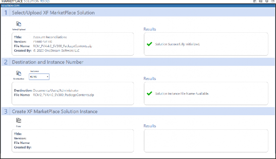
Figure 13.13
Starting with platform release 5.0.1, the ability to encrypt Business Rules was added. New solutions released for the first time (and a few older solutions) are being encrypted in order to prevent changes being made to business logic. This was done in order to ensure that solutions are maintainable for all Users. If a User was to make changes to a Business Rule, they could potentially alter the output of the solution in a negative manner. As customers rely on these results – in the same way that they rely on financial data – it is of the utmost importance that solutions provide the results as envisaged and designed by the MarketPlace team. For these encrypted solutions, if a copy is desired, Users can contact support to have instances provided.
Introduction to the MarketPlace
Customizing Solutions
Introduction to the MarketPlace › Customizing Solutions
Modifying MarketPlace Solutions
A few cautions and considerations regarding the modification of MarketPlace Solutions:
Major changes to Business Rules or custom tables within a MarketPlace Solution will not be supported through normal channels as the resulting solution(s) are significantly different from the core solution(s).
If changes are made to any Dashboard object or Business Rule, consider renaming it or copying it to a new object first. This is important because if there is an upgrade to the MarketPlace Solution in the future, and the customer applies the upgrade, this will overlay and wipe out the changes. This also applies when updating any of the standard Reports and Dashboards.
If modifications are made to a MarketPlace Solution, upgrading to later versions will be more complex depending on the degree of customization. Simple changes, such as changing a logo or colors on a Dashboard, do not impact upgrades significantly. Making
changes to the custom database tables and Business Rules – which should be avoided – will make an upgrade even more complicated.
Introduction to the MarketPlace › Customizing Solutions
Custom Event Handler
With the addition of encryption to Business Rules, we knew that we needed to provide a mechanism to allow some customizations. To support this, we added custom event models to encrypted solutions to select solutions. Some solutions interact with the platform and cloud environment at such a deep level that we do not allow any changes to the code, in order to protect the OneStream environment (e.g., Cloud Admin Tools). The solutions that do enable custom event models have information in their help documentation that details how to enable custom events.
The custom event model is a separate custom event Business Rule that references the solution’s main Dashboard Extender Rule. It allows Users to add custom processes before and after select events. For example, you can add an event that sends an email after a specified button is clicked, or which validates data in a grid prior to a save.
Introduction to the MarketPlace
Integration
Most MarketPlace solutions require some integration with the OneStream environment in order to work properly. In most cases, it is simply adding a custom Workflow and pointing to a Dashboard in the solution. This allows the solutions to use built-in Workflow security to limit access, and provides Users with a guided experience that they are used to in OneStream’s data loading process.
In Account Reconciliation, for example, the setup involves creating a new Scenario and assigning it to an unused Scenario Type (Model in the reference below). This is the Scenario that will be used to process Account Reconciliations. Creating a new Scenario Type allows Users to re-use existing Workflows and simply update the Scenario Type security to limit the Users that can access RCM. From the Workflow Profiles screen, the Administrator selects the Workflows to be used with RCM, sets the Workflow Name to Workspace, and assigns 0_Frame_RCM_GridViewOnePlace as the Dashboard Name.
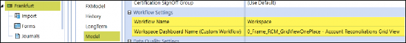
Figure 13.14
| Note: Each solution will include detailed instructions on the steps needed to integrate said solution into OneStream. |
Introduction to the MarketPlace
Testing
Each MarketPlace solution that is released is tested by a team of Quality Assurance engineers. Each development team works to create high-quality code, but – as with other software – this needs to be tested to ensure a quality product. We test not only that the new feature works the way the ticket says it should, but we also test for negative use cases where the developer may not be expecting a User to enter an incorrect value or select a certain combination of options. We’re looking to cover all the bases to ensure that Users can rely on our software right out of the box.
Even though each solution goes through quality testing during development, we recommend that Users install any update on a Development Server prior to installing it in production. This allows Users to verify results within their own environment before making a change that cannot (potentially) be rolled back.
Introduction to the MarketPlace
MarketPlace Enablement
In addition to developing the MarketPlace roadmap and providing guidance on new feature development, the product management team is responsible for product enablement. For each release, the product management team creates the marketing and knowledge transfer for a given solution. This enablement ranges from release notification emails to webcasts and online videos.
After a solution has been released on the MarketPlace, the product management team sends out a release notification internally to all employees so that everyone is aware of the new product or update. Brand new solutions are demonstrated internally to ensure that all teams have all the information they need to support and market the new product. After the internal teams have been notified, they notify customers and partners of the release. For an initial release of a solution, an email is sent to all customers detailing the solution and its uses. Solution releases that are only updates of existing solutions are only sent to Users who have previously downloaded the solution. Notification emails include key new features and a copy of the release notes.
The product management team also creates Academy videos for major solutions. These videos show how solutions work, as well as setup and design considerations. OneStream Academy delivers the information needed on-demand, which enables the OneStream community to learn via a self-serve approach. The OneStream Academy is available free of charge for those OneStream Administrators and Implementation Consultants who attend the Application Build or the Power User Reporting Class.
Introduction to the MarketPlace
Key Takeaways
The customization of solutions should be avoided, and the custom event model should be utilized whenever possible. Prior to making changes, please reach out to support to determine if there is a better design/method to achieve the desired result. If not, support can enter an enhancement to update the solution to try to meet your requirements. Users get more reliable, maintainable solutions, and new features get to be shared with the entire community.
Always consider your existing environment when implementing a new solution. Adding a new solution can have an impact on the amount of data being processed as well as the number of concurrent Users. This may require additional server resources or additional OneStream licensing. The OneStream support and cloud teams can help with this type of request.
The MarketPlace Solution Tool (MST) provides an efficient way to copy an existing MarketPlace solution; it enables multiple solution instances to coexist in a single OneStream Application. This provides the flexibility for different business units (within the same OneStream application) to segregate and secure their data.
| Note: If a solution has been encrypted, and thus cannot be copied, the OneStream support team can provide additional copies of a solution. |
Introduction to the MarketPlace
Epilogue
One of the things I love about having joined OneStream early on is all the celebrations that truly represent this group of people.
In my second year with OneStream, we closed our first million-dollar deal near the end of December. This was, of course, a reason to celebrate. A $20B international company having the faith to buy financial software from a startup located in a small office in suburban Michigan even more so. So, in true OneStream fashion, we head to our local bar. However, we don’t celebrate with Champagne; we instead opt for a black velvet (Guinness and Champagne).